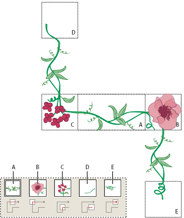
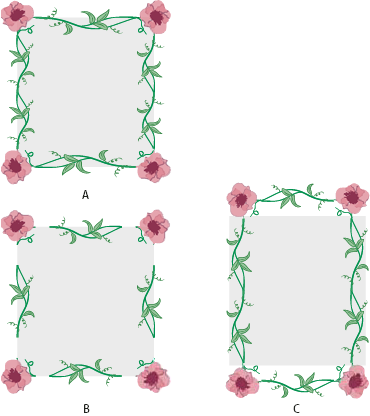

Brush options
You can specify different options for the different types of brushes. To change the options for a brush, double-click the brush in the Brushes panel.
Scatter, Art, and Pattern brushes all have identical options for colorization.
 Colorization options for brushes
Colorization options for brushes
The colors that a scatter, art, or pattern brush paints depend on the current stroke color and the colorization method of the brush. To set the colorization method, select one of the following options in the Brush Options dialog box:
- None
- Displays colors as they appear in the brush in the Brushes panel. Choose None to keep a brush the same colors as in the Brushes panel.
- Tints
- Displays the brush stroke in tints of the stroke color. Portions of the art that are black become the stroke color, portions that aren’t black become tints of the stroke color, and white remains white. If you use a spot color as the stroke, Tints generates tints of the spot color. Choose Tints for brushes that are in black and white, or when you want to paint a brush stroke with a spot color.
- Tints And Shades
- Displays the brush stroke in tints and shades of the stroke color. Tints and Shades maintains black and white, and everything between becomes a blend from black to white through the stroke color. Because black is added you may not be able to print to a single plate when using Tints and Shades with a spot color. Choose Tints and Shades for brushes that are in grayscale.
- Hue Shift
-
Uses the key color in the brush artwork, as shown in the
Key Color box. (By default, the key color is the most prominent
color in the art.) Everything in the brush artwork that is the key
color becomes the stroke color. Other colors in the brush artwork
become colors related to the stroke color. Hue Shift maintains black,
white, and gray. Choose Hue Shift for brushes that use multiple
colors. To change the key color, click the Key Color eyedropper,
move the eyedropper to the preview in the dialog box, and click
the color you want to use as the key color. The color in the Key
Color box changes. Click the eyedropper again to deselect it.
For information and samples about each choice, click Tips.
Calligraphic brush options
- Angle
- Determines the angle of rotation for the brush. Drag the arrowhead in the preview, or enter a value in the Angle text box.
- Roundness
- Determines roundness of the brush. Drag a black dot in the preview away from or toward the center, or enter a value in the Roundness text box. The higher the value, the greater the roundness.
- Diameter
-
Determines the diameter of the brush. Use the Diameter slider, or enter
a value in the Diameter text box.
The pop‑up list to the right of each option lets you control variations in the shape of the brush. Select one of the following options:
- Fixed
- Creates a brush with a fixed angle, roundness, or diameter.
- Random
- Creates a brush with random variations in angle, roundness, or diameter. Enter a value in the Variation text box to specify the range within which the brush characteristic can vary. For example, when the Diameter value is 15 and the Variation value is 5, the diameter can be 10, or 20, or any value in between.
- Pressure
- Creates a brush that varies in angle, roundness, or diameter based on the pressure of a drawing stylus. This option is most useful when used with Diameter. It is available only if you have a graphics tablet. Enter a value in the Variation text box to specify how much more or less than the original value the brush characteristic will vary. For example, when the Roundness value is 75% and the Variation value is 25%, the lightest stroke is 50% and the heaviest stroke is 100%. The lighter the pressure, the more angular the brush stroke.
- Stylus Wheel
- Creates a brush that varies in diameter based on manipulation of the stylus wheel. This option is available only if you have a graphics tablet that can detect the direction in which the pen is tilted.
- Tilt
- Creates a brush that varies in angle, roundness, or diameter based on the tilt of a drawing stylus. This option is most useful when used with Roundness. It is available only if you have a graphics tablet that can detect the direction in which the pen is tilted.
- Bearing
- Creates a brush that varies in angle, roundness, or diameter based on the pressure of a drawing stylus. This option is most useful when used to control the angle of calligraphic brushes, especially when you’re using the brush like a paintbrush. It is available only if you have a graphics tablet that can detect how close to vertical the pen is.
- Rotation
- Creates a brush that varies in angle, roundness, or diameter based on how the drawing stylus pen tip is rotated. This option is most useful when used to control the angle of calligraphic brushes, especially when you’re using the brush like a flat pen. It is available only if you have a graphics tablet that can detect this type of rotation.
Scatter brush options
- Size
- Controls the size of the objects.
- Spacing
- Controls the amount of space between objects.
- Scatter
- Controls how closely objects follow the path independently on each side of the path. The higher the value, the farther the objects are from the path.
- Rotation
- Controls the angle of rotation of the objects.
- Rotation Relative To
-
Sets the angle of rotation for scattered objects relative
to the page or the path. For example, if you select Page, at 0°
of rotation, objects point to the top of the page. If you select
Path, at 0° of rotation, objects are tangent to the path.
The pop‑up list to the right of each option lets you control variations in the shape of the brush. Select one of the following options:
- Fixed
- Creates a brush with a fixed size, spacing, scattering, and rotation.
- Random
- Creates a brush with random variations in size, spacing, scattering, and rotation. Enter a value in the Variation text box to specify the range within which the brush characteristic can vary. For example, when the Diameter value is 15 and the Variation value is 5, the diameter can be 10, or 20, or any value in between.
- Pressure
- Creates a brush that varies in angle, roundness, or diameter based on the pressure of a drawing stylus. This option is available only if you have a graphics tablet. Enter a value in the rightmost text box, or use the Maximum slider. Pressure uses the Minimum value for the lightest tablet pressure and the Maximum value for the heaviest pressure. When you choose this setting for Diameter, the heavier the stroke, the larger the objects.
- Stylus Wheel
- Creates a brush that varies in diameter based on manipulation of the stylus wheel. This option is available only if you have a graphics tablet that can detect the direction in which the pen is tilted
- Tilt
- Creates a brush that varies in angle, roundness, or diameter based on the tilt of a drawing stylus. This option is most useful when used with Roundness. It is available only if you have a graphics tablet that can detect the direction in which the pen is tilted.
- Bearing
- Creates a brush that varies in angle, roundness, or diameter based on the pressure of a drawing stylus. This option is most useful when used to control the angle of brushes. It is available only if you have a graphics tablet that can detect how close to vertical the pen is.
- Rotation
- Creates a brush that varies in angle, roundness, or diameter based on how the drawing stylus pen tip is rotated. This option is most useful when used to control the angle of brushes. It is available only if you have a graphics tablet that can detect this type of rotation.
Art brush options
- Direction
- Determines the direction of the artwork in relation to the line. Click an arrow to set the direction: to place the left side of the art is the end of the stroke; to place the right side of the art is the end of the stroke; to place the top of the art is the end of the stroke; to place the bottom of the art is the end of the stroke.
- Width
- Adjusts the width of the art relative to its original width.
- Proportional
- Preserves proportions in scaled art.
- Flip Along or Flip Across
- Change the orientation of the art in relation to the line.
Pattern brush options
- Tile buttons
-
Let you apply different patterns to different
parts of the line. Click a tile button for the tile you want to
define, and select a pattern swatch from the scroll list. Repeat
to apply pattern swatches to other tiles as needed.
Note: You must add the pattern tiles you want to use to the Swatches panel before you set pattern brush options. After you create a pattern brush, you can delete the pattern tiles from the Swatches panel if you don’t plan to use them for additional artwork.

Tiles in a pattern brush
- A.
- Side tile
- B.
- Outer Corner tile
- C.
- Inner Corner tile
- D.
- Start tile
- E.
- End tile
- Scale
- Adjusts the size of tiles relative to their original size.
- Spacing
- Adjusts the space between tiles.
- Flip Along or Flip Across
- Changes the orientation of the pattern in relation to the line.
- Fit
-
Determines how the pattern fits on the line: Stretch To Fit
lengthens or shortens the pattern tile to fit the object. This option
can result in uneven tiling. Add Space To Fit adds blank space between
each pattern tile to apply the pattern proportionally to the path.
Approximate Path fits tiles to the closest approximate path without
changing the tiles. This option applies the pattern slightly inside
or outside the path, rather than centered on the path, to maintain
even tiling.

Fit options
- A.
- Stretch To Fit
- B.
- Add Space To Fit
- C.
- Approximate Path